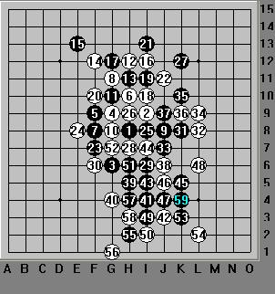

11屆世锦赛之陈科翰VS Karasyov Maxim点评
#1 11屆世锦赛之陈科翰VS Karasyov Maxim点评 作者：茗弈小刀 发表时间：2009-8-8 15:49:36
2009捷克世锦赛场AT第一轮,陈科翰(执白)，台湾棋手，QT积分榜第一名;对手是Karasyov Maxim(执黑)，俄罗斯老将。名月开局,
3打,6手一般着于此点,那么到上图这是老定式总体.感觉还是黑外势强,比白好下一些.那么实战中陈科翰避开了常见的下法,选择了这个6:

7手必然,8活三,9手个人感觉档另一边更好.当然这里稍微贪了下,实战中这个9显然是照顾到自己下面的棋型.反再反,8-12手白意图明确,拓展上边空间.目前白方优势凛然.
13活三,14冲掉再活三,几手交换后,到21手黑成功的控制住了白上边的拓展,目前局面黑好下吧,因为下边路子很宽.其实细心的朋友肯定发现了,其实12手白棋已经杀了:


白完全可以利用自己的优势杀掉!18手保守严谨,但太可惜了!不思争先，胜比登天,这局执白方悬了.可毕竟是实战,我们回到实战中来:

22不死心,继续进攻,黑此时冷静分析了一下,白上边没有什么棋,23手故防守下边,叫杀.24占据杀点.这个24手也可以看作一颗冷子,不仅控制了黑棋左边空间,也在竟静等待与20那个眠三接头的机会......

25活二眠三,也加固自己的堡垒,,使黑棋下盘感觉更厚实.26冲,28回头防.29叫杀,30跟防.心里暗暗为白棋捏了把汗.黑棋接着一阵猛攻,执白者的经验与沉着的棋风此时显露出来,不慌不急,有条不紊的每手都防在要点上.黑棋并没占到什么便宜.到这里还是势均力敌.
考验白棋的时候到了,47又做杀了.我们可以看出俄罗斯老将非但不老,相反还是很熱血激情的人,绝对典型的进攻性棋手.而白方的棋风使我不禁联想到防守型沉稳的顾炜老师.这里我们分析一下,如果48直接防在杀点I3,那么黑必K4活三,继续杀之.如果防在
L6,那么冲4做杀了如下图:

看来势已形成,败即降临.陈科翰陷入深深的长考中......时间一点一滴的过去......
终于,落子了:
48神之一手!!!先冲,50再防.结果完全不一样了!为什么呢?因为49,7,43,47形成一线,那么开始这里那个冲四就不存在了,因为禁手。实在忍不住拍案叫绝呀!
黑哪肯轻易罢休,继续进攻,白仍心平气和的步步跟防.62手黑棋看清形式并清楚意识到杀不出来了,由于开始的进攻也消磨了自己很大的空间,黑棋此时由一匹野马转而冷静下来.
黑分析了下局面,白在右下有棋,于是63防,这是本局棋黑第一手主动防守的棋.考虑黑右上有眠三,64做一手棋.目的应该还是消磨右上的空间,进入收关.嘿,这个黑棋眼尖着呢,一点机会也不会放过,65又做了个杀,这个杀比较隐蔽,但白方凭借多年经验,准确无误防在了H6.见伎俩被识破,黑回到右上,交换完毕,白左上方还有一点优势,但由于子力比较单薄,盘端有限难以利用,75手时双方和棋.
通过这盘棋，不知大家能有什么收获或感想？欢迎大家留言一起交流。
［ 安娜制作所 于 2009-8-8 16:10:23 时花20金币送鲜花一朵］
［ 安娜制作所 于 2009-8-8 16:10:32 时花20金币送鲜花一朵］
［ 有志青年 于 2009-8-8 16:38:02 时奖励此帖[金币加 20 威望加1］
［ 飞哥 于 2009-8-8 18:27:13 时花20金币送鲜花一朵］
［ 飞哥 于 2009-8-8 18:27:21 时花20金币送鲜花一朵］
［ 飞哥 于 2009-8-8 18:27:32 时花20金币送鲜花一朵］
［ 行云流水 于 2
#2 Re:11屆世锦赛之陈科翰VS Karasyov Maxim 作者：安娜制作所 发表时间：2009-8-8 16:10:11
师傅:评得太细致了,花了好多心血,辛劳啦!#3 Re:11屆世锦赛之陈科翰VS Karasyov Maxim 作者：左伟光 发表时间：2009-8-8 16:19:55
感觉25是不是还有更好的点啊
#4 Re:11屆世锦赛之陈科翰VS Karasyov Maxim 作者：香雪美景 发表时间：2009-8-8 16:55:14
师傅你真棒！#5 Re:11屆世锦赛之陈科翰VS Karasyov Maxim 作者：怪 发表时间：2009-8-8 17:36:22
能说书
#6 Re:11屆世锦赛之陈科翰VS Karasyov Maxim点评 作者：吃大米饭的鱼 发表时间：2009-8-8 18:22:38
写得真好,又细致,看着易懂,谢谢小刀老师
#7 Re:11屆世锦赛之陈科翰VS Karasyov Maxim点评 作者：从头再来 发表时间：2009-8-8 18:25:43
双方纠缠得很厉害,白棋思维严谨值得学习,黑棋的进攻也有值得借鉴的地方,辛苦了刀姐,谢谢!#8 Re:11屆世锦赛之陈科翰VS Karasyov Maxim点评 作者：启蒙 发表时间：2009-8-8 18:49:01
我觉得黑31走在39的位置上很强啊。没看到白怎么防。。实战直接冲不好吧#9 Re:11屆世锦赛之陈科翰VS Karasyov Maxim点评 作者：棋心 发表时间：2009-8-8 20:10:56
=======上图对应的爱五子棋谱代码如下，以便你拆解：========
h8i9g6g9f9h10f8g11f12
======================================================
这个9什么结论？？后面白怎么应对？？
#10 Re:11屆世锦赛之陈科翰VS Karasyov Maxim点评 作者：方圆之外 发表时间：2009-8-9 13:29:57
9楼的9应该黑优吧。#11 Re:11屆世锦赛之陈科翰VS Karasyov Maxim点评 作者：没定式随便下 发表时间：2009-8-9 15:07:44
48手位置错了吧？#12 Re:11屆世锦赛之陈科翰VS Karasyov Maxim点评 作者：nara 发表时间：2009-8-10 9:40:29
我以为白下这个12的时候，后面都考虑清楚了！没想到。。。。。。
#13 Re:11屆世锦赛之陈科翰VS Karasyov Maxim点评 作者：妙玉偷星 发表时间：2009-8-11 18:33:40
实战毕竟很不一样，感觉完全不同。12楼的哥哥有空来道场我们下下吧
#14 Re:11屆世锦赛之陈科翰VS Karasyov Maxim点评 作者：曦云涅磐 发表时间：2009-8-11 20:49:02
小刀姐姐收我 做徒弟吧